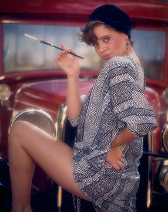
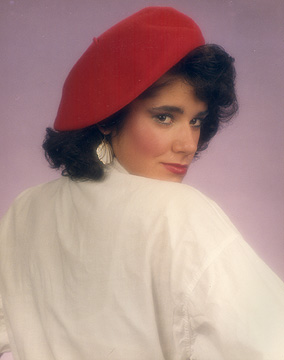

Flapper, Porterville, California. This image was produced with indirect sunlight using a medium format (6.45 cm) camera and soft focus filter (silver) at the annual Porterville Photography Day in 1985. Photo copyright © Ruben G. Mendoza, 1985. Catalog 4.000.

Red Beret. Studio strobe photo of model with medium format (6.45 cm) camera and soft focus filter (silver). Photo copyright © Ruben G. Mendoza, 1985. Catalog 5.001.
Ruben G. Mendoza
Online Photo Portfolio of Selected Photography